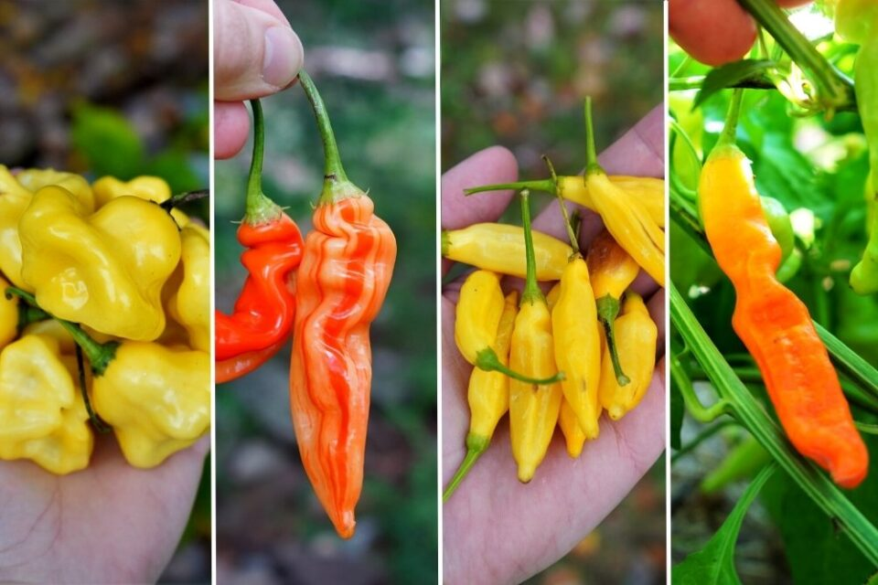

About Baccatum
This species originated in the Andes Mountains, and was domesticated by the Arawak people 4,000 years ago. They can be distinguished by their flower, which has yellow and/or green spots on the corolla. It is also larger compared to other pepper flowers. This species is widely grown, and has a formidable amount of spice (ranging from 30,000 to 50,000 SHU). Capsicum baccatum even includes the new-and-trending Sugar Rush Stripey Pepper!
History
Capsicum baccatum originated in the Andes Mountains, and was domesticated around 4,000 years ago. It has been used as a spice much throughout history, and are also pickled and used as fermented hot sauces. It is a very versatile ingredient.
| Taxonomic Level | Classification |
|---|---|
| Domain | Eukarya |
| Kingdom | Plantae |
| Phylum | Caryophyllales |
| Class | Eudicots |
| Order | Solanalese |
| Family | Solanaceae |
| Genus | Capsicum |
| Species | Baccatum |
